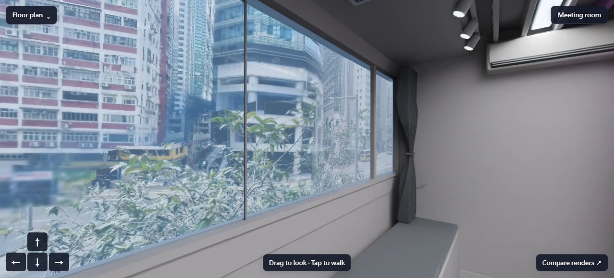
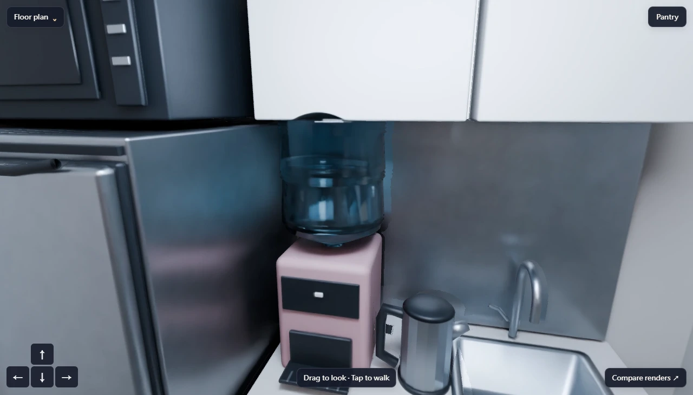
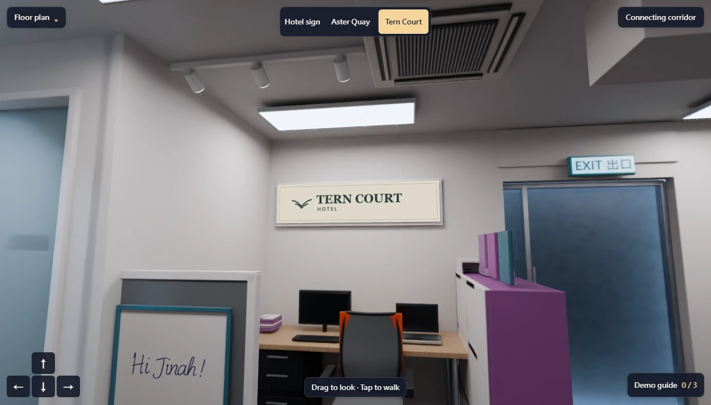

辦公室漫遊 v14
水面晃動短片同更新紀錄
今次更新
- 茶水間：局部補光並重渲，睇到飲水機樽入面嘅水位；碰到枱邊或行近點擊飲水機就會晃動。
- 會議室右窗：用 11 月 19 日補拍相片補返右窗樓面同街道，保留原有窗框、窗簾同近景枝葉。
- 酒店示範：可即時換接待處招牌，唔使重開漫遊，已睇嘅 ESG 資訊進度亦保留。
試酒店示範（免密碼） · 試茶水間（需解鎖 Research Studio）



水面晃動短片同更新紀錄
試酒店示範（免密碼） · 試茶水間（需解鎖 Research Studio）



同一條行走路線，左邊係 Blender Cycles 獨立重渲，右邊係 Babylon.js 實際畫面。
正在開啟實測紀錄…
每張左邊係 Cycles，右邊係網頁。點圖可打開原尺寸。
64 張 4096 × 2048 全景由 Blender 5.3 Cycles 按母檔燈光、材質及 AgX 色彩輸出，每張最多 64 次取樣。v13 參考影印機望向門口嘅畫面，將曝光由 +0.5 調至 −0.3 EV，並按參考圖修正「EXIT 出口」牌嘅比例、顏色同光面。
網頁用每個機位嘅位置同全尺寸深度，將附近原畫投影返場景幾何。轉頭、橫移同中途停步，都沿用同一個畫面。白板筆跡取自板面專屬墨跡材質嘅 Cycles 正投影。地氈用四幅正投影還原近睇嘅纖維。辦公區兩道屏風透明帶同室內玻璃窗後面嘅枱櫃，按原有幾何逐條視線量度深度。會議室窗外沿用九張現場相片建立嘅街景、前景枝葉同窗內機位嘅反光。兩個拍攝機位之間嘅畫面都經過重建。
用「量度呢部裝置」可以直接睇目前繪圖尺寸、畫格時間中位數同第 95 百分位。
試算一部 24 GB NVIDIA A10，按 US$1.29／GPU 小時，開機 100 小時係 US$129，另計稅項及其他服務。實際每格速度同香港連線延遲需要另行實測。 Lambda 官方價格 ↗